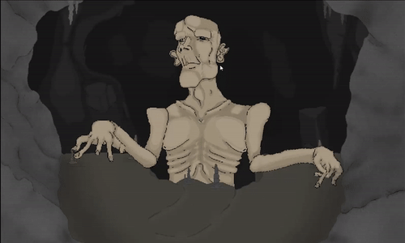
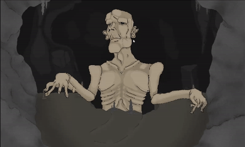

Richard Belovic's Portfolio
Mobile: +44 (0)7397153326
Email: richardbelovic@gmail.com
CV: CV.pdf
LI: LinkedIn Page

Hobbyist Unity Programmer and UE4 Tool Engineer, specialized in game development and programming using the Unity and UE4 game engines
Unity Projects
Heroic Dregs (Current project)
2D top-down Vampire Survivors-esque game created partially using the Unity DOTS 0.51 framework. The player upgrades their hero as they slaughter hordes of enemies.
Sleepless Kevin
A PS1 style psychological horror game, made for a Halloween game jam with the prompt "Ghosts doing normal things".

Johnny's Deathwish
2D side-scroller where you play as Johnny, a man on a quest to save his ducky. The player has to traverse multiple regions, featuring challenging levels with a variety of traps and two boss encounters.

6 Bodies
Short first-person horror game demo, set in gas station in the rural midwest.

Doris
2D top-down RPG where the player has to fight through a land of monsters and upgrade their arsenal in preparation for a boss fight.
Unreal Engine Projects

Big Boys
Multiplayer third-person brawler. Free for all with the objective of pushing your friends off the map or into a trap.

WIP Norse Project
Collaboration project with the goal of creating a polished third-person controller set in a Norse-techno map.
 The concept of the game is quite simple, you load into the match, pick up a hammer and try to hit other players into toxic sludge or into spikes. We went wild with the design, movement and animation seeing as we made the game mainly for our friend group.
The concept of the game is quite simple, you load into the match, pick up a hammer and try to hit other players into toxic sludge or into spikes. We went wild with the design, movement and animation seeing as we made the game mainly for our friend group.
 The project provided a lot of experience with writing game features with multiplayer in mind and as a whole taught us how to use Unreal. Personally, I also had a lot of fun rigging and animating.
The project provided a lot of experience with writing game features with multiplayer in mind and as a whole taught us how to use Unreal. Personally, I also had a lot of fun rigging and animating.

 The player could sell items at the traders and buy potions or other items to help them on their journey. The inventory/shop and modular armour systems were by far the most difficult to create, especially as they all had to be able to interact with each other.
The player could sell items at the traders and buy potions or other items to help them on their journey. The inventory/shop and modular armour systems were by far the most difficult to create, especially as they all had to be able to interact with each other.
 Although the game was quite buggy and the combat felt sluggish, we felt very satsified with the game as our first project and we ended up learning a lot.
Although the game was quite buggy and the combat felt sluggish, we felt very satsified with the game as our first project and we ended up learning a lot.
 The final boss arena was similar to Kitava in Path of Exile or Belial from Diablo 3. The boss would hit the ground, releasing projectiles that had to be dodged and occasionally making boulders fall while spewing vomit. After the boss was defeated, the game would end.

The final boss arena was similar to Kitava in Path of Exile or Belial from Diablo 3. The boss would hit the ground, releasing projectiles that had to be dodged and occasionally making boulders fall while spewing vomit. After the boss was defeated, the game would end.

 6 Bodies' main antagonist is a 2D sprite portraying a tall creepy man. The player ends up getting locked inside the gas station, and has to make their way into the basemant where the main part of the game takes place.
6 Bodies' main antagonist is a 2D sprite portraying a tall creepy man. The player ends up getting locked inside the gas station, and has to make their way into the basemant where the main part of the game takes place.
 The large basement is used as a hunting ground for the AI, if the player gets caught, they die and return back to the beginning of the basement.
The large basement is used as a hunting ground for the AI, if the player gets caught, they die and return back to the beginning of the basement.
 The player has to sneak their way around the basement, looking for keys and ways through while dodging encounters with the hunter AI. The main objective is to open a big metal door at one of the basement and reach it, after which the demo ends.
The player has to sneak their way around the basement, looking for keys and ways through while dodging encounters with the hunter AI. The main objective is to open a big metal door at one of the basement and reach it, after which the demo ends.
 We went for the Daggerfall approach of portraying the creepy man, making sprites of multiple angles and switching them based on where the AI was looking relative to the player. The AI has the following behaviours:
We went for the Daggerfall approach of portraying the creepy man, making sprites of multiple angles and switching them based on where the AI was looking relative to the player. The AI has the following behaviours:


 The goal of this project was to create our own polished 2D character controller that we could throw into a bunch of levels with a variety of traps.
The goal of this project was to create our own polished 2D character controller that we could throw into a bunch of levels with a variety of traps.
 Angus and I worked on a large array of traps:
Angus and I worked on a large array of traps:
 The later levels feature 'Builder' AI, they're capable of jumping over pitfalls and climbing walls in order to hunt the player down. These were by far the most fun to program and test.
The later levels feature 'Builder' AI, they're capable of jumping over pitfalls and climbing walls in order to hunt the player down. These were by far the most fun to program and test.
 A total of 4 regions and 27 levels were made, the final level of the game features a boss fight against the man that stole Johnny's ducky. The boss has three phases: rotating around the arena and spewing lasers + projectiles, charging the player horizontally, and finally, going invulnerable while spawning two flying AI.
A total of 4 regions and 27 levels were made, the final level of the game features a boss fight against the man that stole Johnny's ducky. The boss has three phases: rotating around the arena and spewing lasers + projectiles, charging the player horizontally, and finally, going invulnerable while spawning two flying AI.